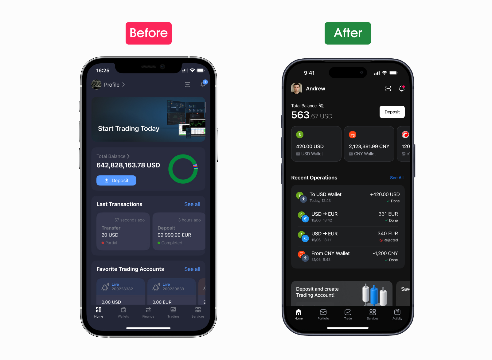
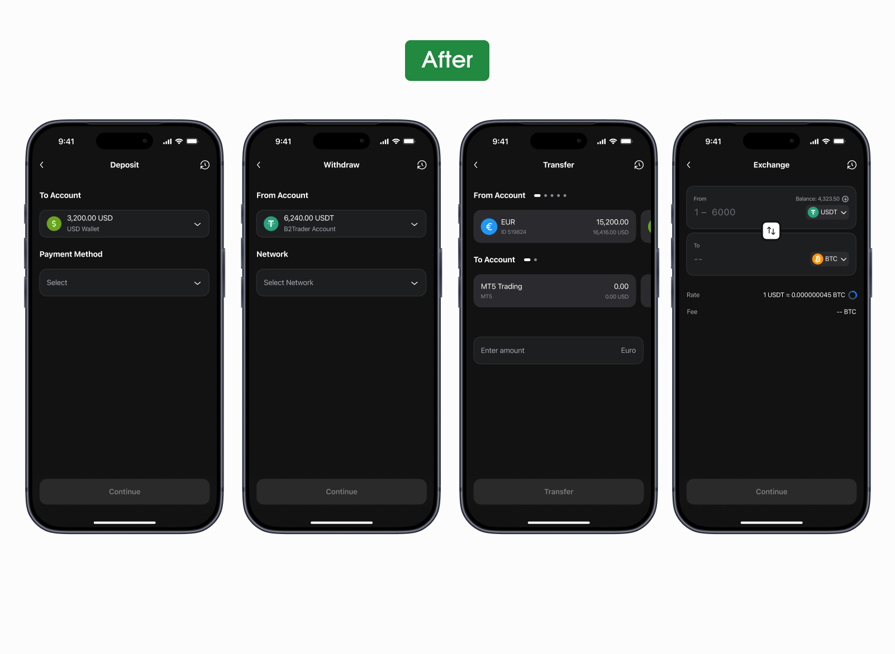
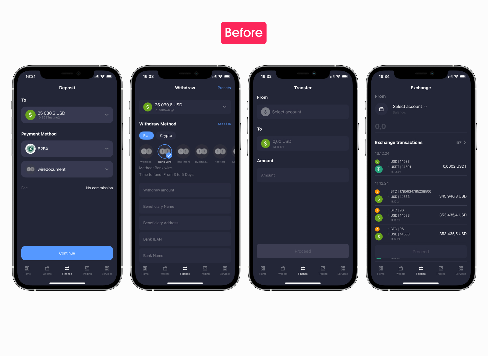
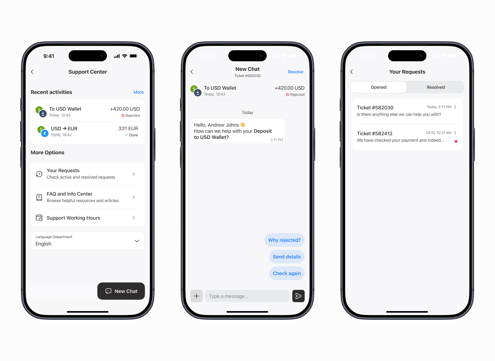

August 2025. B2Core — B2broker's flagship white-label product — had three platforms (iOS, Android, web) that had quietly drifted apart over the years, each evolving largely on its own. Different tokens, different components for the same input, different patterns for the same flow. The brief said redesign. The first job was to build the system the redesign would stand on.
Context
At the time of the redesign I was the senior product designer on B2Core specifically — B2broker's flagship product, the one we sell to 100+ brokers as a white-label solution. Each broker gets a tenant of the same engine with their own colours, logo, and tone. The redesign couldn't be a one-shot visual — it had to be a system flexible enough to dress itself differently for every broker that bought it.
B2Core packages a stack of modules. There's the personal cabinet, the financial operations module (deposits, withdrawals, internal transfers, currency exchange), a trading layer with the built-in terminal plus integrations with cTrader and MetaTrader 4 and 5, in-app savings for clients who want yield on idle balances, and IB Room — the referral programme partners use to onboard new clients.
Where I started
Phase one started with research — not sketches, not a moodboard. Three lanes ran in parallel: a cross-platform inventory of what we shipped, Amplitude analytics on what users actually did with it, and a competitor audit of how similar apps solved the same things. They were chosen so each lane would fail differently — the patterns that survived all three were the ones worth acting on.
Three pictures the inventory drew
The cross-platform audit alone painted three patterns. They weren't surprising — they were everywhere — but seeing them on one wall made them impossible to dismiss.
Decision 1 — collapse the sprawl
I started by squeezing the variant explosion. Every primitive that appeared more than once across platforms got collapsed into a single canonical version — one input, one button, one card. Visual differences that had felt platform-specific turned out to be different versions of the same thing.
The icon set was already shared across all three platforms — the one piece that hadn't drifted. What it needed wasn't deduplication, it was a restyle: those icons had been drawn for an earlier visual brief, and the new system was building toward a different vocabulary. The whole set got redrawn to share the new system's language — same stroke weight, same corner rules, same metaphors as the rest of the visual layer. Then I built the minimum-viable base: the smallest set of components that could lay out the main screens. Not a full library — a working starter pack. The library expanded later, when the main flows proved the shape of the system.
Decision 2 — a customisation layer for white-label
White-label means every broker buys the same product and wants to look like only they run it. The customisation layer carries the parts that change between brokers: brand palette, accent, typography choices within a tight set, illustration tone, shape language. Everything else stays in the shared engine.
The pay-off: a new broker brand stopped being a multi-week design project. It became a theme file and a config. Same engine, repainted.
Home — what mattered, surfaced
The old home was a wall of tiles — every feature shouting from the same square. A new user couldn't tell what mattered. Amplitude told a clearer story than any opinion in the room: most opens went to checking the balance and the last operation, and most taps clustered around the same four-or-five daily actions. Everything else was edge traffic.
The redesign separates blocks visually and functionally by that priority: balance and recent operations on top, wallets in a carousel, services below. Two legacy elements got retired without replacement — a banner that pushed users out of the app to the web, and a pie chart that looked beautiful but never explained what its colours meant. Money — the reason people open this app — sits where the eye lands first.

Onboarding and registration — first impression, repaired
At first launch the user has two things to get through: the introduction and the signup. Both used to be heavy. The new onboarding leans on the broker's actual config — only the features that broker has enabled show up on the first screens, so we never promise something the broker doesn't ship. And instead of a generic 'welcome' carousel, the intro doubles as a quick tour of what the app can actually do — by the time someone taps 'Create account', they've already seen the real features in motion, not a slideshow of icons.
Registration was the heaviest part of the old flow: branching, repeated fields, unclear states. We trimmed it down. Fewer steps overall, and the secondary questions that used to pile onto a brand-new user on day one moved out of the signup and into the profile screen, where they belong. What stayed in registration is only what a broker actually needs to onboard someone — one decision per screen, visible progress, inline validation. By the time engineering instrumented the new flow, the old drop-off pattern had quietly stopped showing up.
Portfolio — one entry to the money model
Before the redesign, the three things users care about most — wallets, trading accounts, and savings — were scattered across the app, each behind its own entry point in its own corner. The redesign brings all three under one roof. Portfolio is now the single entry to the user's money: wallets, trading accounts, and savings live inside as separate sections, each with its own balances and actions, but the user gets to them by going to one place, not three.
Core flows — one shape, four scenarios
Deposit, withdraw, transfer, exchange — four flows where one wrong tap costs real money. In the old version all four looked and behaved differently: the same essential job, but each scenario had its own form, its own pickers, its own way of showing fees. Users had to relearn the interface every time they switched between them. The redesign builds all four around the same shape and the same component set. The bottom tab bar disappears the moment a flow starts — while the user is moving money, nothing competes for attention. The whole screen is the action.
What's left is one rhythm across all four — pick source, review, confirm — built from the same components: the same amount field, the same fee block, the same currency picker. The shape wasn't something we invented: it's the spine of how Kraken, Binance, Bybit, Revolut and most of the category solve the same task. Leaning on the muscle memory users already have from those apps was cheaper than asking them to learn a new one. The deposit flow got the deepest rework of all four — there's a separate case study below.


Supporting screens — no fallback to legacy
Settings, notifications, account, support entry — every supporting surface was brought under the new system. The point wasn't novelty. It was removing the last traces of legacy so the edges of the product don't fall back to the old app the moment a user steps off the main path.
IB Room — rebuilt from zero
Brokers don't grow on direct marketing alone — a serious share of new clients comes through partners (introducing brokers, or IBs) who recommend the broker to people in their own networks. When those referred clients start trading, the partner earns a commission. IB Room is the place inside B2Core where those partners live: from here they invite new clients, watch them register and start trading, and track what they're earning for it.
In the legacy version, IB Room was the most-complained-about area in the entire product: opaque payouts, monitoring that felt random, a learning curve that scared partners off before they referred anyone. It was the one part where I didn't iterate — I rebuilt it from zero.
Plain-language explanations replaced the technical jargon. The dashboard shows referrals and their activity in real time, not just lump-sum totals. Payouts moved to a predictable view with clear thresholds. Partners who used to give up at the first opaque screen now see, step by step, where their commissions come from.
Support, wired to the operation
Support is the part of a financial app users only meet on a bad day. The redesign rebuilt it around the operation, not around an inbox. From any rejected payment, declined withdrawal, or off-looking trade, a ticket opens already wired to that exact transaction — the support team sees the operation, the wallet, the timestamps without asking. Conversation stays in one thread per ticket.
Quick-reply chips — “Why rejected?”, “Send details”, “Check again” — turn the most common follow-ups into a single tap. The Requests screen splits opened from resolved so a live conversation never gets buried in history.

Cross-platform parity
In the old product, iOS, Android, and the web had diverged in features as much as in visuals. Some screens only existed on one platform. Some flows behaved differently depending on where the user was logged in. The new system closes that gap. Most components are shared. Only truly platform-specific patterns — share sheets, system pickers, status bars — stay native. A user moving between their phone and the browser recognises the same product, not a reinterpretation of it.
The token system — what it was all for
All the pieces above feed into one engine. The same Button component knows how to look on iOS, on Android, and on the web — the platform layer is a token swap, not a redesign. The same Input adopts the typography scale of whichever broker is rendering it. Brand customisation lives in one tokens file per broker — colour, accent, illustration style, shape language. The engine reads it and dresses itself.
This is the part that took the longest to land and pays back the most. The handful of platform-specific things that have to be platform-specific stay platform-specific. Everything else — the bulk of the product — is one set of components, dressed by tokens.
What looked like a redesign was, underneath, a tokens-engineering project. The screens were a downstream effect.
From solo to a team
Phase one — design system, main flows, customisation engine — ran solo. Once the visual style and the mechanics held together, the team grew to five designers. Phase two was a different shape of work: deep component reviews, missing states, edge cases, the long tail of specialised components nobody needs until they suddenly do. Engineers joined for implementation. The hand-off stopped being a meeting and became a thing the codebase grew into.
What I carry forward
Two things that travelled out of this case into the next ones.